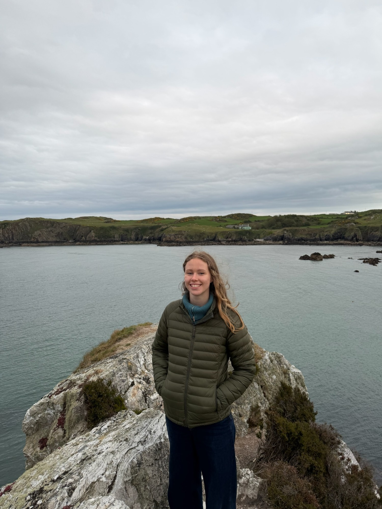
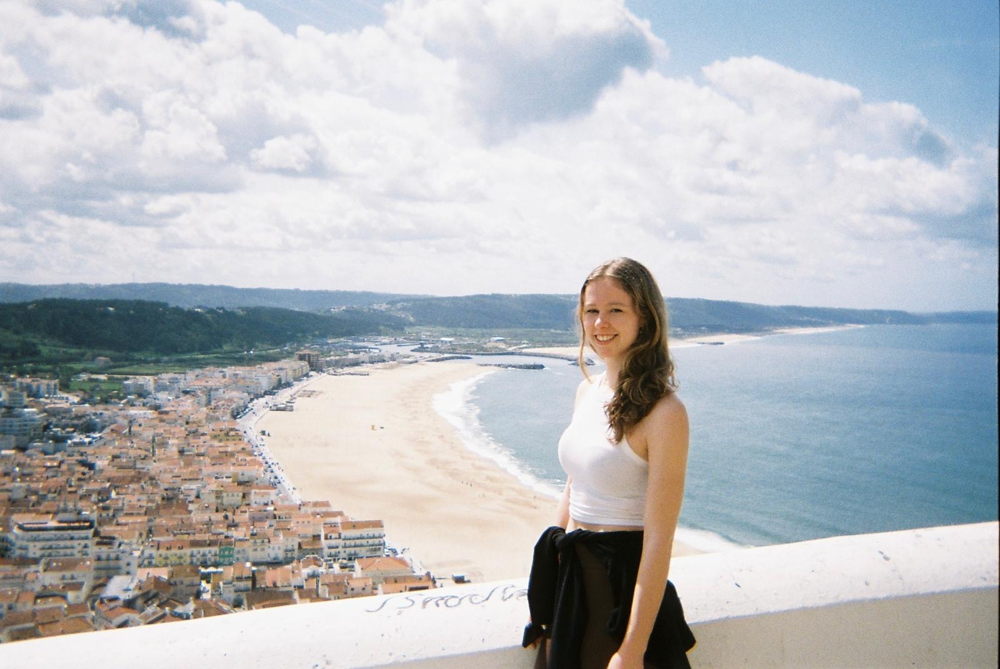

Sophia Staheli



Education & Experience
2019–20
2021
2021–22
2022
2022–25
2025–
Rotary Exchange
2019–2020
Bremen, Germany
VERTO Florence, Italy
2021
University semester
Pedalheads
2021–2022
Bike instructor, Seattle
VERTO Costa Rica
2022
University semester
Czech University of Life Sciences Prague
2022–2025
BSc Environmental Data Science
Wageningen University & Research
2025–present
MSc Geo-Information Sciences
Projects

GIS in Context
Scotland’s Peatlands: Opportunities for Investors
This project was a StoryMap designed to inform and engage potential investors in Scottish peatland restoration. Peatlands cover approximately 20% of Scotland and store around 1.6 million tonnes of carbon, yet an estimated 80% are currently degraded and actively emitting CO2. The StoryMap communicated the ecological and financial case for restoration, combining narrative with spatial data to highlight peatland distribution across Scotland. Selected study areas were mapped in detail, with peat depth data used to calculate carbon storage in both shallow and deep peat layers. The primary goal was to bridge the funding gap left by government investment by making a compelling, data-driven case to private investors.
View storymap →

Geoscripting
Elephant Presence Modeling — Welgevonden Reserve
This project used elephant tracking data and environmental covariates to model and predict elephant presence within the Welgevonden Game Reserve in South Africa. A logistic regression model was trained using variables such as distance to roads, human settlements, elevation, temperature, and time of day, and evaluated using confusion matrices, ROC curves, and AUC metrics. Kernel density estimates were also generated to identify spatial hotspots of elephant activity across the 2018 to 2020 period. Results were delivered through an interactive Shiny dashboard, allowing users to explore KDE heatmaps and adjust environmental parameters to visualize predicted probability of elephant presence. The codebase was designed to be adaptable, enabling other researchers to apply the same pipeline to different reserves and species datasets.

Geotools
Wastewater Pipeline Routing
This project used ArcGIS to determine the optimal pipeline routes connecting industrial wastewater areas to the largest water refinement basin in Druten, the Netherlands. A cost raster was constructed by incorporating multiple spatial constraints, with suitability values scaled between 1 and 100 to reflect varying levels of routing difficulty. Least-cost path analysis was then applied to calculate the most efficient possible connections between each wastewater source and the target basin. All outputs were consolidated into a single map deliverable, displaying the refinement basin, wastewater areas, candidate pipeline routes, and the final suitability cost raster.

IDHV
Groenlo Wildlife Watchtower: Thermal Activity and Viewshed Analysis
This project aimed to engage the public in selecting the location for a new wildlife watchtower in Groenlo, Netherlands, through a participatory digital platform. Early morning drone flights equipped with thermal sensors were conducted across three candidate sites to capture wildlife activity, successfully identifying birds and deer in their natural habitat. A terrestrial lidar scanner was used to perform viewshed analyses at each location, producing clear 2D maps showing what visitors would be able to see from each proposed tower. Orthomosaic heatmaps with labeled wildlife were generated for each site and incorporated into a Figma-designed, clickable website where members of the public could review the evidence and cast their vote. The project combined advanced geospatial methods with accessible web design to make technical outputs meaningful and actionable for a general audience.
View prototype →
Skills
QGISArcGISPythonRSQLGEE
LiDARRadarML / DLMultispectralHyperspectralRemote SensingRTM
Let’s connect
sstaheli52@gmail.com